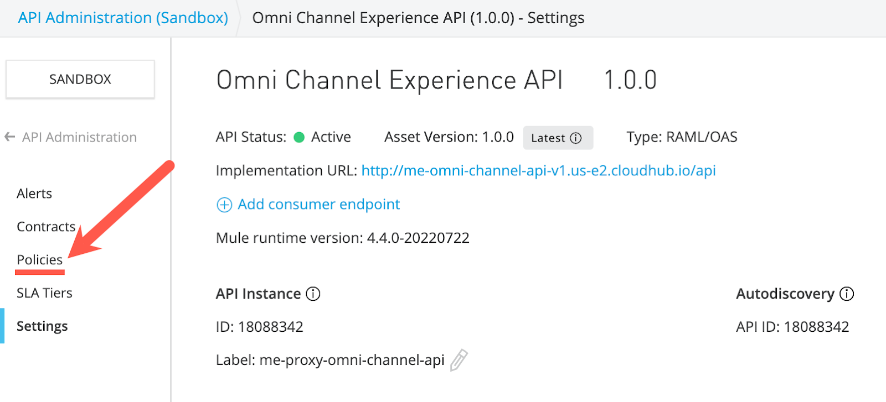

O gerenciamento de API é essencial para uma arquitetura baseada em API, pois fornece uma estrutura de governança para suas APIs em todas as três camadas. Para que o gerenciamento de API ocorra, precisamos ser capazes de hospedar nossas APIs, novas e existentes, em um gateway de API que será usado para aplicar políticas e coletar dados para análise.
A MuleSoft pode aplicar governança diretamente a uma API implementada pela MuleSoft ou por meio de um gateway de proxy para essas e outras APIs externas existentes.
As APIs que usaremos são duas versões da API Omni Channel. Você criará um gateway de proxy para uma implementação simulada já implantada neste Laboratório 1.
Agora, definiremos uma API que atuará como proxy para a API Omni Channel da Mythical Corporation. O proxy será implantado no API Gateway da Anypoint Platform, que é alimentado pelo Mule Runtime. O Mule Runtime pode ser executado de 3 formas: localmente, em uma nuvem privada ou no serviço CloudHub hospedado pela Anypoint Platform. Neste cenário, usaremos o último, CloudHub.
Os clientes acessarão a API por meio do API Gateway, que encaminhará as solicitações para a implementação simulada da API Omni Channel real. Ter o proxy implantado no gateway de API permite que a Anypoint Platform gerencie, controle o acesso e monitore o uso da API, que veremos nos laboratórios seguintes.

- No Anypoint Platform clique no ícone do API Manager para começar a criar sua API.
- Você também pode clicar no botão de navegação no canto superior esquerdo e, a seguir, no API Manager.

- Selecione Sandbox como o ambiente

Para este laboratório, vamos configurar a API como um proxy para a implementação simulada de API Omni Channel da Mythical Corporation. A API está disponível como uma API HTTP Restful acessível por meio do URL base http://workshop-omni-channel-mock-service-v40.cloudhub.io/api.
Para criar o proxy, vamos obter a definição de API do Exchange.
- Agora vamos configurar um gateway de proxy de API para esta API. De volta à página de API Administration, clique em Add API e selecione Add new API.
- Faça a configuração do Runtime com as seguintes informações e clique em Next
- Select runtime:
Mule Gateway - Proxy type:
Deploy a proxy application - Target type:
CloudHub - Runtime version:
4.4.0 - Proxy app name:
[username]-proxy-omni-channel-api. Este parâmetro será usado para identificar a API no API Manager.
- Configure a API com as informações e clique em Next
- Select API from Exchange
- Search API:
Omni Channel Experience API. - Asset Type: Selecione na lista suspensa
RAML / OAS. - API version: selecione na lista suspensa
1.0.0 (Latest). - Asset Version: selecione na lista suspensa
1.0.0 (Latest).

- Configure o Endpoint e pressione Next:
- Rótulo da instância da API:
[username]-proxy-omni-channel-api. Este parâmetro será usado para identificar a API no API Manager. - Implementation URI:
http://[Domain-link-da-aplicação-no-CloudHub]/api - Base Path:
/
- Revise as informações da sua API antes de fazer o deploy e pressione Save & Deploy
- Note que a sua API ainda está listada como
Unregistered. Para resolver isso, abra a aba de Runtime & Endpoint Configuration (no final da página) para finalizar o deploy.
- Confira as seguintes informações já preenchidas e pressione Save & Deploy
- Runtime version:
4.4.0 - Proxy app name
- Rótulo da instância da API
- Implementation URI
- Consumer Endpoint
- Base Path
- Você deve ver uma caixa de texto "Your API is being deployed to Mule 4.4.0 CloudHub". Após algum tempo (pode demorar alguns minutos) uma caixa de texto verde de implementação bem-sucedida aparece na parte superior da tela.
- Depois de implementado, note que o status da API mudou para Active, como mostrado abaixo. Isso indica que sua API foi implantada com sucesso e agora está sendo gerenciada.
Para testar o gerenciamento de políticas, você irá adicionar uma política de limitação de taxa (rate limiting) à API.
- No canto esquerdo, clique na guia Policies nas definições de API.

- Clique no botão Add Policy.
- Pesquise por Rate Limiting e selecione a policy. Clique em Next

- Insira um máximo de solicitações de 3 por 1 minuto conforme mostrado e clique em Apply.
- Você deve ver a política de limitação de taxa agora em Políticas aplicadas.
- Aguarde um minuto (o API Gateway recebe atualizações de política a cada 60 segundos, por padrão). Você também pode verificar se sua API recebeu a nova política olhando os registros. Procure na guia logs no Runtime Manager para sua aplicação.
- Procure mensagens de log semelhantes às seguintes com.mulesoft.module.policies.:
- Teste a API usando Postman ou qualquer outra ferramenta de teste de API e acesse seu URL de proxy adicionando
/products/searchno final (por exemplo, http://<username> -proxy-omni-channel.us-e2.cloudhub.io/products/search).
- Teste-o novamente pressionando o Send botão 3 vezes.
- Na terceira chamada, você receberá uma mensagem de erro indicando que a cota foi excedida. Isso demonstra que sua política de limitação de taxa foi aplicada.

Parabéns! Você acaba de gerenciar uma API usando Mulesoft API Manager.